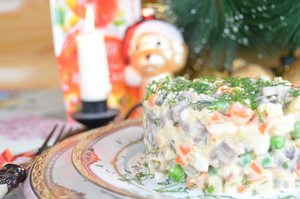

Несмотря на свое французское происхождение и название, майонез давно считается русским соусом. Бессмертный салат «Оливье» и мясо «по-французски» обязательно содержат в списке ингредиентов этот жирный соус.
Сторонники здорового образа жизни ругают майонез за калорийность, а любители плотно поесть продолжают добавлять его практически во все блюда. В чем же польза и вред майонеза?
Настоящий майонезНастоящий майонез – это холодный соус родом с юга Европы, в состав которого входят оливковое масло, яичный желток, лимонный сок, сахар, соль и горчица.
Жирность такого продукта может доходить до 80 процентов, а энергетическая ценность 100 г – до 800 ккал.
Соусы промышленного приготовления, выпускающиеся под этим названием, к оригинальному майонскому соусу имеют весьма отдаленное отношение. Но «настоящим майонезом» принято считать именно их.
Есть ли польза?Польза майонеза весьма призрачна. Его поклонники упирают на содержание в этом соусе растительного масла, богатого витаминами и незаменимыми жирными кислотами.
Не последнюю роль играют доступность майонеза и его характерный вкус, позволяющий съесть с этой приправой практически все.
Диетологи говорят лишь о безвредности качественного майонеза для здоровья и не более.
Жир и только жирРассмотрим состав майонеза. Во-первых, майонез – очень жирный соус. Произведенные по ГОСТ 30004.1–93 высококалорийные сорта майонеза содержат от 55 процентов жира.
А вот необходимого организму белка в майонезе практически нет. Его обычно чуть менее процента на 100 г готового соуса.
Не стоит забывать, что калорийность растительного масла, из которого изготавливается майонез, стремится к показателю 900 ккал на 100 г. Плюс дополнительные ингредиенты.
В результате небольшая 200-граммовая пачка белого соуса, вылитая в большую миску салата, прибавляет к его калорийности более 1200 ккал – половину дневной потребности человека в энергии.
Даже небольшая порция майонеза, добавленного к макаронам или пельменям, увеличивают калорийность блюда на 100–150 ккал.
Низкокалорийный майонезОриентируясь на потребности людей, следящих за фигурой, производители запустили производство низкокалорийных майонезов с жирностью не выше 40 процентов.
В таких продуктах часть растительного жира и яичного порошка заменяют водой. Поскольку вода с жирами не смешивается, в низкокалорийные майонезы добавляются эмульгаторы и загустители, чтобы добиться однородности соуса.
Кроме того, низкокалорийный майонез, лишенный яичного порошка и части растительных масел, требует дополнительных ароматизаторов и красителей.
Внимание: срок годностиМайонез, состоящий из натуральных продуктов, достаточно дорог и хранится недолго.
В стандартном майонезе в роли консерванта выступает лимонная кислота. В более дешевых и «долгоиграющих» сортах консервирующие вещества добавлены дополнительно.
Сорбат калия, например, продлевает срок годности майонеза до нескольких месяцев даже при комнатной температуре.
Для сравнения, готовый «домашний майонез» может простоять в холодильнике от силы пару суток.
Несколько советов тем, кто не может жить без майонеза— Внимательно читайте состав майонеза. Идеальное сочетание ингредиентов: растительные масла, яйца или яичные продукты, горчичный порошок, сахар, соль и уксус. И больше ничего.
— Срок хранения такого майонеза в еще не открытой упаковке без холодильника – не больше месяца.
— Жирность высококалорийного майонеза по ГОСТу – 67 процентов. У менее жирных майонезов рецептура отличается от классической. Такие соусы, как правило, содержат дополнительные красители, ароматизаторы и консерванты.
— Уменьшить жирность майонеза в салатах и других блюдах можно, если смешать его со сметаной или несладким йогуртом. Даже если заменить майонез на сметану максимальной жирности, калорийность заправки уменьшится в два раза.
— Не добавляйте майонез в выпечку или горячие блюда: его эмульсия от температуры все равно разрушается.
— Для макарон, картофеля или пельменей лучше сделать сливочный соус. Он даст более нежный вкус при снижении калорийности блюда почти в три раза.
Самое важноеДиетологи считают майонез условно безопасным в небольших количествах.
Если вы не можете обойтись без майонеза, выбирайте на полках магазинов тот, что изготовлен по классической рецептуре и не содержит дополнительных консервантов, красителей и ароматизаторов.
Если можете – смело заменяйте сметаной или несладким йогуртом.